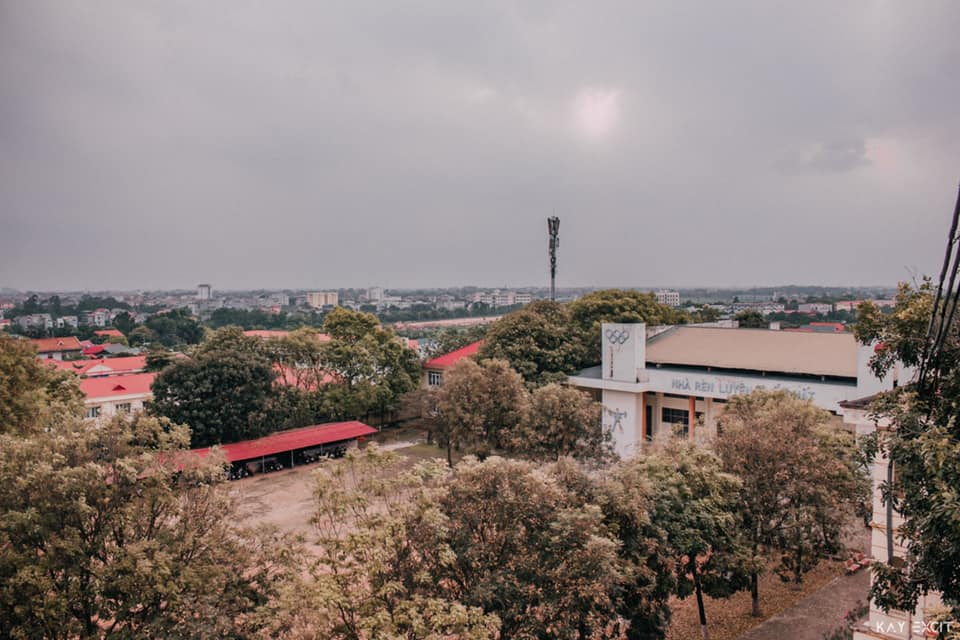

Gặp nhau
Tớ nhớ hai đứa gặp nhau từ các cuộc thi học sinh giỏi năm cấp 2. Thời đấy 2 đứa còn chưa thân thiết lắm. Sang đến các năm cấp 3, hai đứa có vẻ nói chuyện với nhau nhiều hơn vì cùng chung đội tuyển toán, thi thoảng cũng hay chém gió mấy chuyện linh tinh. Bước lên đại học, mỗi người có việc học riêng, deadline, bạn bè mới, ... rồi các cuộc nói chuyện cũng ít đi nhiều. Tớ cũng nghĩ đây là điều tất yếu. Có những bạn thoải mái hơn khi kết bạn, nói chuyện với những người bạn mới, có những bạn thì vẫn quen nói chuyện với những người bạn cũ hơn như tớ.
